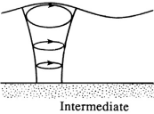

They are readily time-integrated
\[
\xi \cong -a \frac{\cosh(k(z_0 + H))}{\sinh(kH)} \sin(kx_0 - \omega t) \quad \text{and} \quad \zeta \cong a \frac{\sinh(k(z_0 + H))}{\sinh(kH)} \cos(kx_0 - \omega t)
\]
\(\xi(t)\) and \(\zeta(t)\) are entirely oscillatory. Neither contains a term that increases with time so the assumption that \(x_0\) and \(z_0\) are time independent is self-consistent when \(a \ll \lambda\).
Elimination of the phase \((kx_0 - \omega t)\) from the equation above gives
\[
\frac{\xi^2}{\left[a \frac{\cosh(k(z_0 + H))}{\sinh(kH)}\right]^2} + \frac{\zeta^2}{\left[a \frac{\sinh(k(z_0 + H))}{\sinh(kH)}\right]^2} = 1
\]
which represents an ellipse
Both the semi-major axis, \(a\cosh[k(z_0 + H)]/\sinh(kH)\) and the semi-minor axis, \(a\sinh[k(z_0 + H)]/\sinh(kH)\) decrease with depth, the minor axis vanishing at \(z_0 = -H\)  The distance between foci remains constant with depth.
\(\boxed{\xi \cong -a \frac{\cosh(k(z_0 + H))}{\sinh(kH)} \sin(kx_0 - \omega t) \quad \text{and} \quad \zeta \cong a \frac{\sinh(k(z_0 + H))}{\sinh(kH)} \cos(kx_0 - \omega t)}\)
show that the phase of the motion is independent of \(z_0\), so fluid elements in any vertical column move in phase. If one of them is at the top of its orbit, then all elements at the same \(x_0\) are at the top of their orbits